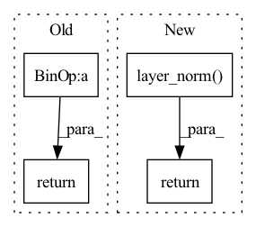

Pattern ID :2782
Before Change
eps = 1e-5 if x.dtype == torch.float32 else 1e-3
var = torch.var(x, dim = 1, unbiased = False, keepdim = True)
mean = torch.mean(x, dim = 1, keepdim = True)
return (x - mean) * var.clamp(min = eps).rsqrt() * self.g
class PreNorm(nn.Module):
def __init__(self, dim, fn):After Change
self.register_buffer("beta", torch.zeros(dim))
def forward(self, x):
return F.layer_norm( x, x.shape[-1:], self.gamma, self.beta)
// positional embeds
class LearnedSinusoidalPosEmb(nn.Module):In pattern: SUPERPATTERN
Frequency: 4
Non-data size: 4
Instances Fragment ID: 9191336
Project Name: lucidrains/recurrent-interface-network-pytorch
Commit Name: 627fa4e8c36a59b89f571cdfdb478a7b72cbf855
Time: 2022-12-24
Author: lucidrains@gmail.com
File Name: rin_pytorch/rin_pytorch.py
M Class Name: LayerNorm
N Class Name: LayerNorm
M Method Name: forward(2)
N Method Name: forward(2)
M Parent Class: nn.Module
N Parent Class: nn.Module
M File Name: rin_pytorch/rin_pytorch.py
N File Name: rin_pytorch/rin_pytorch.py
M Start Line: 83
M End Line: 86
N Start Line: 77
N End Line: 77
Before Change
def forward(self, x):
var = torch.var(x, dim = -1, unbiased = False, keepdim = True)
mean = torch.mean(x, dim = -1, keepdim = True)
return (x - mean) / (var + self.eps).sqrt() * self.g
// parallel with residual
// discovered by Wang et al + EleutherAI from GPT-J fameAfter Change
self.register_buffer("beta", torch.zeros(dim))
def forward(self, x):
return F.layer_norm( x, x.shape[-1:], self.gamma, self.beta)
// parallel with residual
// discovered by Wang et al + EleutherAI from GPT-J fame
Fragment ID: 9191348
Project Name: lucidrains/palm-pytorch
Commit Name: 0832087f78006c10d52c0600c7377c5929568e0b
Time: 2022-04-04
Author: lucidrains@gmail.com
File Name: palm_pytorch/palm_pytorch.py
M Class Name: LayerNorm
N Class Name: LayerNorm
M Method Name: forward(2)
N Method Name: forward(2)
M Parent Class: nn.Module
N Parent Class: nn.Module
M File Name: palm_pytorch/palm_pytorch.py
N File Name: palm_pytorch/palm_pytorch.py
M Start Line: 18
M End Line: 20
N Start Line: 19
N End Line: 19
Before Change
)
def forward(self, x):
return x + self.layers(x)
class TransformerEncoderLayer(nn.Module):After Change
ffn_output = self.ffn(x)
ffn_output = gelu_fast(ffn_output)
ffn_output = self.ffn_output(ffn_output)
return self.layer_norm( x + ffn_output)
class TransformerEncoderLayer(nn.Module):
Fragment ID: 9191350
Project Name: learning-at-home/hivemind
Commit Name: ca6d87a8379c562e82f5a939728e292e7fd2fa14
Time: 2021-04-08
Author: mryabinin0@gmail.com
File Name: hivemind/server/layers/common.py
M Class Name: FeedforwardBlock
N Class Name: FeedforwardBlock
M Method Name: forward(2)
N Method Name: forward(2)
M Parent Class: nn.Module
N Parent Class: nn.Module
M File Name: hivemind/server/layers/common.py
N File Name: hivemind/server/layers/common.py
M Start Line: 19
M End Line: 19
N Start Line: 19
N End Line: 22
Before Change
// compute output
att = (att_score @ v).view(batch_size, seg_len, -1)
return self.layer_norm(self.mlp(att) + x)
def circulant_shift(self, x, shift):
After Change
// compute output
att = (att_score @ v).view(batch_size, seg_len, -1)
out = self.dropout(self.mlp(att))
return self.layer_norm( out + x)
def circulant_shift(self, x, shift):
Shifts top row of `x` by `shift`, second row by `shift-1`, etc. This is Fragment ID: 9191329
Project Name: augustwester/transformer-xl
Commit Name: cc7f32da8e71438812e757fbe2a131b14a5cfc2f
Time: 2022-11-28
Author: august.wester@gmail.com
File Name: attention.py
M Class Name: MultiHeadAttention
N Class Name: MultiHeadAttention
M Method Name: forward(4)
N Method Name: forward(4)
M Parent Class: nn.Module
N Parent Class: nn.Module
M File Name: attention.py
N File Name: attention.py
M Start Line: 28
M End Line: 51
N Start Line: 29
N End Line: 54